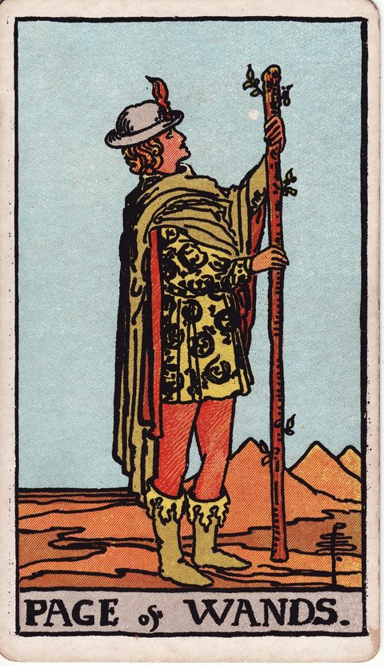

WANDS · FIRE
Page of Wands — Meaning
Wands

- CategoryWands
- SymbolFire / Wands (passion, action) / Court card: Page (news, learning)
- UprightCuriosity, New learning, Trying
- ReversedLosing interest quickly, Lack of experience, Ideas only
A card about taking interest in something new and beginning to learn.
Page of Wands stands for "Curiosity, New learning, Trying" when upright, and "Losing interest quickly, Lack of experience, Ideas only" when reversed. Look into what caught your attention, or try a little of it. Even if you are not good at first, trying is how you learn whether it fits you.
Reading it in a decision — In a situation of trying a new learning or hobby, read this card by using the sprout of 'this interests me' as material even if you cannot picture the finished form, deciding first how far you will test it, and starting small. Reversed, narrow to one thing first, so you do not start on impulse and quickly turn fickle.
The decision this speaks to: When you're torn about further study or relearning
SYMBOLS
The symbols in the picture
A young person holds a wand and looks at the sprouts at its tip. The land around is wide and sandy. Experience is still small, but the feeling of finding something interesting is treasured.
UPRIGHT
Upright meaning
- Curiosity
- New learning
- Trying
Look into what caught your attention, or try a little of it. Even if you are not good at first, trying is how you learn whether it fits you.
Ease of moving forward4 / 5 (Easy to move forward)
- What you may not be noticing
- What has caught your interest, even slightly, lately?
- What to watch out for
- Before trying, do not promise big results.
- What do you really want?
- Learning about what makes you excited?
- A thought you can let go of
- You do not have to hold back just because you are a beginner.
- A hint for choosing
- Which option lets you experience and learn lightly?
REVERSED
Reversed meaning
- Losing interest quickly
- Lack of experience
- Ideas only
Do you start on impulse and soon jump to something else? First decide how far you will test this one thing.
Ease of moving forward2 / 5 (Prepare and rethink first)
- What you may not be noticing
- Are you only adding new things?
- What to watch out for
- Before quitting, check how far you actually tested it.
- What do you really want?
- Which interest is honestly still alive?
- A thought you can let go of
- You do not have to put a hand to everything.
- A hint for choosing
- Which option grows your experience one thing at a time?
FOR YOUR DECISION
Hints for your decision
How to read it when you are deciding
The Page of Wands gazes at the young leaves sprouting at the tip of the wand. It is not yet in shape, but it represents news that moves the heart, and the sprout of interest. In a decision, it teaches that even if you cannot draw the finished form, the feeling of 'this interests me' may serve as material for judging. Add options for touching it on a trial basis — going to a briefing, trying an experience, hearing from someone who knows it well. Picking up small curiosities without ignoring them leads to the next big choice.
How to face a familiar worry
This card stays close when you are interested in a new field but unsure whether you are serious. Reversed, watch the tendency for interest to drift and not last. Before starting, decide a small promise like 'I will try it at least three times,' and whims become easier to tell from true interest.
Questions to ask yourself before you decide
Is there a way to test the feeling of 'this interests me'? Is there a small chance to touch it — a briefing, a trial? Would that interest stay unfaded after three tries? Who could you ask to move one step forward?
"Ease of moving forward" is the strength of the tailwind behind an option if you move on it now — not a judgment of whether things will turn out well or badly.
RELATED WORRIES
Decisions to think through with this card
Start from a theme close to the decision in front of you, and find ways of thinking and questions to ask yourself.
RELATED CARDS